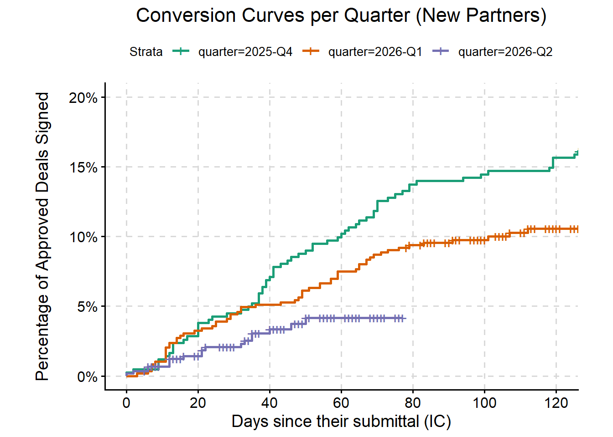
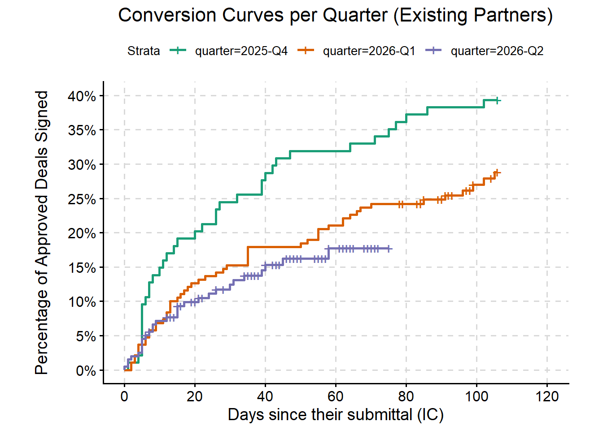

# Set the environment. If you move the files, reroute accordingly.
setwd("C:/Users/aldo/Documents/Sales Team Analysis/Kaplan-Meier Curves/Automated pipeline/R Scripts")
folder_databases <- "C:/Users/aldo/Documents/Sales Team Analysis/Kaplan-Meier Curves/Automated pipeline/Databases"
library(readr)
library(readxl)
library(dplyr)
library(janitor)
library(stringr)
library(lubridate)
library(fuzzyjoin)
library(survival)
library(ggpubr)
library(survminer)
library(gridExtra)
library(ggpubr)
library(grid)B2B Sales Conversion Quarterly Analysis Using Survival Curves
Executive Summary
This report evaluates the longitudinal performance of B2B sales conversions within CorDuro. By applying Kaplan-Meier survival curve analysis across distinct quarterly cohorts, this study isolates the conversion trajectories for both New and Existing Partners from 2025-Q4 through 2026-Q2. The findings reveal a severe quarter-over-quarter deterioration in both deal velocity and final win rates.
survival_curves.R. This code automates the name matching across two data silos, and executes the survival curve analysis.
Define directories and libraries.
During the creation of this code, the names that didn’t match were exported into a .csv file. This was worked upon manually to make a dictionary of names that would be referenced by the code to correct the record on those deals. The lines to match the “orphan” names were deleted, and now the code loads the dictionary first.
Loading the dictionary and preparing the data integration.
# Load the deal dictionary.
deal_dict <- read_csv(file.path(folder_databases, "deals_dictionary.csv"))
translations <- deal_dict %>%
select(name_nd,
name_IC)
injections <- deal_dict %>%
filter(action == "inyect") %>%
select(property_name = name_IC,
property_address,
time_of_submittal,
approved,
new_partner) %>%
mutate(time_of_submittal = dmy(time_of_submittal),
quarter = paste0(year(time_of_submittal), "-Q", quarter(time_of_submittal)))Load, clean, and transform the two data silos.
# Load the New Deals spreadsheet and clean the names.
ND_ss_raw <- read_excel(file.path(folder_databases,"Autopilot - New Deals.xlsx"), sheet = "Deal Information")
ND_ss <- ND_ss_raw %>%
remove_empty("rows") %>%
clean_names() %>%
select(property_name,
contract_signed_date) %>%
mutate(is_expansion = str_detect(property_name, regex("expansion",ignore_case = TRUE)),
property_name = str_to_lower(property_name),
property_name = str_remove_all(
property_name,"\\(.*expansion.*\\)|\\d+[a-z]+\\s+expansion|\\bapartments\\b|\\bthe\\b|\\bapt\\b|\\bapts\\b"),
property_name = str_replace_all(property_name, "[[:punct:]]",""),
property_name = str_trim(property_name),
contract_signed_date = as.Date(contract_signed_date)) %>%
left_join(translations, by = c("property_name" = "name_nd")) %>%
mutate(property_name = coalesce(name_IC, property_name)) %>%
select(-name_IC)
# Load the Investment Committee spreadsheet and clean the names.
IC_ss_raw <- read_excel(file.path(folder_databases,"IC Request V4.xlsx"), sheet = "Form Responses")
IC_ss <- IC_ss_raw %>%
remove_empty("rows") %>%
clean_names() %>%
select(property_name,
property_address = propertys_address,
time_of_submittal = timestamp,
approved = approved_denied,
new_partner = new_or_existing_partner) %>%
mutate(time_of_submittal = as.Date(time_of_submittal),
quarter = paste0(year(time_of_submittal), "-Q", quarter(time_of_submittal)),
property_name = str_to_lower(property_name),
property_name = str_remove_all(property_name, "\\bapartments\\b|\\bthe\\b|\\bapt\\b|\\bapts\\b"),
property_name = str_replace_all(property_name, "[[:punct:]]",""),
property_name = str_trim(property_name)) %>%
bind_rows(injections)Generate the master database and apply a few time constricting rules.
# Create the master data base using a "left_join."
master_data <- left_join(IC_ss, ND_ss, by = "property_name", relationship = "many-to-many") %>%
mutate(time_alive = contract_signed_date - time_of_submittal) %>%
filter((approved == "Approved"|!is.na(contract_signed_date)))
# Erasing duplicate "time travelers" (negative time alive).
master_data <- master_data %>%
filter(time_alive >= 0|is.na(time_alive)) %>%
# For every IC approval, only keep the most immediate signed date.
group_by(property_name, time_of_submittal) %>%
slice_min(time_alive) %>%
# If one deal has multiple IC approvals, keep the oldest.
group_by(property_name, contract_signed_date) %>%
slice_max(time_alive) %>%
ungroup()
# Verify that the dictionary has all the deals that are orphan and that are post-IC.
orphans_nd <- anti_join(ND_ss, IC_ss, by = "property_name") %>%
filter(contract_signed_date >= as.Date("2025-10-01"))Prepare the variables needed for the Kaplan-Meier survival curves, calculate the T95 thresholds and do one final clean-up.
# Construction of the variables needed for the survival curves.
survival_curves <- master_data %>%
mutate(new_partner = case_when(
new_partner %in% c("Existing", "Existing (Partner Expansion)", "Existing Partner") ~ "Existing Partner",
new_partner %in% c("New", "New Partner") ~ "New Partner",
TRUE ~ NA_character_)) %>%
mutate(signed = if_else(!is.na(contract_signed_date),1,0),
duration_days = if_else(signed == 1, as.numeric(
time_alive), as.numeric(Sys.Date() - time_of_submittal))) %>%
filter(quarter != "2025-Q3")
# setting the T95 thresholds.
t95_limits <- survival_curves %>%
filter(signed == 1, !is.na(new_partner)) %>%
group_by(new_partner) %>%
summarize(t95_limit = quantile(duration_days, probs = 0.95, na.rm = TRUE), .groups = 'drop')
survival_curves_t <- survival_curves %>%
left_join(t95_limits, by = "new_partner") %>%
mutate(signed = if_else(duration_days > t95_limit, 0, signed),
duration_days = if_else(duration_days > t95_limit, as.numeric(t95_limit), duration_days)) %>%
select(-t95_limit)
# No NA in New/Existing Partner.
survival_curves_t_no_NA <- survival_curves_t %>%
filter(!is.na(new_partner),
quarter != "2025-Q3")Execute the survival curves (inverted, for presentation).
# Survival Curves for New Partners.
km_new_partners <- survival_curves_t_no_NA %>%
filter(new_partner == "New Partner")
fit_new <- survfit(Surv(duration_days, signed) ~ quarter, data = km_new_partners)
graph_new <- ggsurvplot(fit_new,
data = km_new_partners,
fun = "event",
break.time.by = 20,
surv.scale = "percent",
ylim = c(0, 0.20),
break.y.by = 0.05,
ggtheme = theme_survminer() + theme(aspect.ratio = 0.65,
plot.title = element_text(hjust = 0.5),
axis.title.y = element_text(margin = margin(r = 15)),
panel.grid.major = element_line(color = "grey85", linetype = "dashed")),
xlim = c(0, 120),
title = "Conversion Curves per Quarter (New Partners)",
xlab = "Days since their submittal (IC)",
ylab = "Percentage of Approved Deals Signed",
palette = "Dark2")
print(graph_new)
# Survival Curves for Existing Partners.
km_existing_partners <- survival_curves_t_no_NA %>%
filter(new_partner == "Existing Partner")
fit_existing <- survfit(Surv(duration_days, signed) ~ quarter, data = km_existing_partners)
graph_existing <- ggsurvplot(fit_existing,
data = km_existing_partners,
fun = "event",
break.time.by = 20,
surv.scale = "percent",
ylim = c(0, 0.40),
break.y.by = 0.05,
ggtheme = theme_survminer() + theme(aspect.ratio = 0.65,
plot.title = element_text(hjust = 0.5),
axis.title.y = element_text(margin = margin(r = 15)),
panel.grid.major = element_line(color = "grey85", linetype = "dashed")),
xlim = c(0, 120),
title = "Conversion Curves per Quarter (Existing Partners)",
xlab = "Days since their submittal (IC)",
ylab = "Percentage of Approved Deals Signed",
palette = "Dark2")
print(graph_existing)
Execute the deliverables and one final metrics analysis.
#| fig-width: 32
#| fig-height: 16
#| column: page
# Deliverable.
plot1 <- graph_new$plot
plot2 <- graph_existing$plot
graphs <- marrangeGrob(list(plot1, plot2), nrow = 2, ncol = 1, top = NULL)
pdf_path <- file.path("survival_curves_quarterly_report.pdf")
pdf(file = pdf_path, width = 8.5, height = 11)
print(graphs)[[1]]
NULLdev.off()png
2 # Metrics report.
metrics_report <- survival_curves_t_no_NA %>%
group_by(quarter, new_partner) %>%
summarize(
'Deals Approved' = n(),
'Total Signed' = sum(signed == 1),
'Win Rate (%)' = round((sum(signed == 1) / n()) * 100, 1),
'Signed by D20 (%)' = round((sum(signed == 1 & duration_days <= 20) / n()) * 100, 1),
'Signed by D40 (%)' = round((sum(signed == 1 & duration_days <= 40) / n()) * 100, 1),
'Signed by D60 (%)' = round((sum(signed == 1 & duration_days <= 60) / n()) * 100, 1),
'Signed by D80 (%)' = round((sum(signed == 1 & duration_days <= 80) / n()) * 100, 1),
'Signed by D100 (%)' = round((sum(signed == 1 & duration_days <= 100) / n()) * 100, 1),
'Signed by D120 (%)' = round((sum(signed == 1 & duration_days <= 120) / n()) * 100, 1),
'Median of Days to Sign' = round(median(duration_days[signed == 1], na.rm = TRUE), 1),
.groups = 'drop')
report_new <- metrics_report %>%
filter(new_partner == "New Partner") %>%
select(-new_partner)
report_existing <- metrics_report %>%
filter(new_partner == "Existing Partner") %>%
select(-new_partner)
g_report_new <- tableGrob(report_new, theme = ttheme_minimal(base_size = 11))
g_report_existing <- tableGrob(report_existing, theme = ttheme_minimal(base_size = 11))
title_report_new <- textGrob("Performance Metrics: New Partners",
gp = gpar(fontsize = 14, fontface = "bold", col = "#1f4e79"))
title_report_existing <- textGrob("Performance Metrics: Existing Partners",
gp = gpar(fontsize = 14, fontface = "bold", col = "#1f4e79"))
pdf_output_path <- "metrics_report.pdf"
pdf(file = pdf_output_path, width = 16, height = 8)
grid.arrange(
title_report_new, g_report_new,
textGrob(""),
title_report_existing, g_report_existing,
ncol = 1,
heights = unit(c(1, 3, 1, 1, 3), "null"))
dev.off()png
2 library(knitr)
kable(report_new, caption = "Performance Metrics: New Partners")| quarter | Deals Approved | Total Signed | Win Rate (%) | Signed by D20 (%) | Signed by D40 (%) | Signed by D60 (%) | Signed by D80 (%) | Signed by D100 (%) | Signed by D120 (%) | Median of Days to Sign |
|---|---|---|---|---|---|---|---|---|---|---|
| 2025-Q4 | 422 | 68 | 16.1 | 3.8 | 7.1 | 10.2 | 13.7 | 14.5 | 15.6 | 44.0 |
| 2026-Q1 | 587 | 60 | 10.2 | 3.2 | 5.1 | 7.5 | 9.4 | 9.7 | 10.2 | 39.5 |
| 2026-Q2 | 588 | 18 | 3.1 | 1.4 | 2.7 | 3.1 | 3.1 | 3.1 | 3.1 | 21.0 |
kable(report_existing, caption = "Performance Metrics: Existing Partners")| quarter | Deals Approved | Total Signed | Win Rate (%) | Signed by D20 (%) | Signed by D40 (%) | Signed by D60 (%) | Signed by D80 (%) | Signed by D100 (%) | Signed by D120 (%) | Median of Days to Sign |
|---|---|---|---|---|---|---|---|---|---|---|
| 2025-Q4 | 94 | 37 | 39.4 | 20.2 | 28.7 | 31.9 | 37.2 | 38.3 | 39.4 | 20.0 |
| 2026-Q1 | 190 | 52 | 27.4 | 12.6 | 17.9 | 21.1 | 24.2 | 26.3 | 27.4 | 24.5 |
| 2026-Q2 | 197 | 29 | 14.7 | 9.6 | 13.7 | 14.7 | 14.7 | 14.7 | 14.7 | 12.0 |
Conclusion
The longitudinal analysis of these survival curves completely reframes the health of CorDuro’s sales funnel. The gap between the Investment Committee’s submittal date and contract execution is widening, and the probability of a deal being signed is shrinking quarter over quarter for both New and Existing Partners.